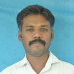
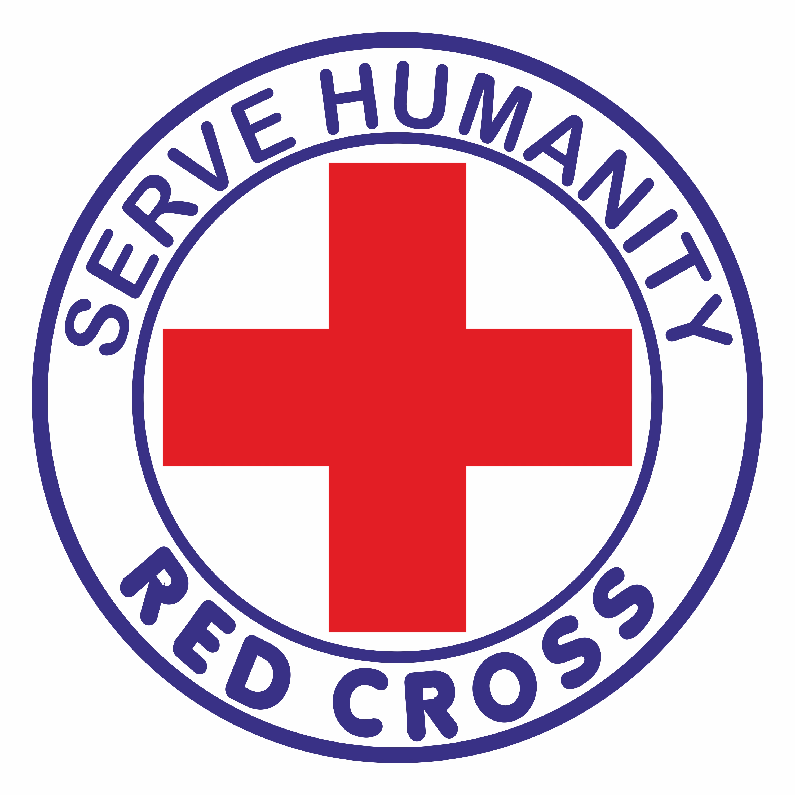

<!DOCTYPE html>
<html lang="en">

<head>
    <title>Welcome To Government Arts and Science College Palkulam Kanyakumari - 629401 </title>
    <link rel="icon" href="images/college_logo.png" type="image/png">
    <meta charset="UTF-8">
    <meta http-equiv="X-UA-Compatible" content="IE=edge">
    <meta name="viewport" content="width=device-width, initial-scale=1.0">
    <link rel="stylesheet" href="css/bootstrap.min.css">
    <link rel="stylesheet" href="css/slick.css">
    <link rel="stylesheet" href="css/aos.css">
    <link rel="stylesheet" href="css/remixicon.css">
    <link rel="stylesheet" href="css/style.css">
    <link rel="stylesheet" href="css/responsive.css">
</head>

<body>

    <div class="top-section-bar">
        <div class="container">
            <div class="top-sec-inner d-flex flex-wrap justify-content-between align-items-center">
                <div class="info-holder d-flex flex-md-row align-items-start align-items-md-center mb-4 mb-md-0">
                    <div class="email-wrap d-flex align-items-center pe-3">
                        <i class="ri-mail-fill"></i>
                        <a href="mailto:gasckanyakumari01@gmail.com" class="ms-2 d-block">gasckanyakumari01@gmail.com</a>
                    </div>
                    <div class="phone-wrap d-flex align-items-center ms-3">
                        <i class="ri-phone-fill"></i>
                        <a href="tell:04652-267507" class="ms-2 d-block">04652-267507</a>
                    </div>
                </div>
                <!--./info-holder-->
                <div class="right-nav-holder d-flex align-items-center">
                    <div class="calender-wrap me-4">
                        <a href="docs/college/College Calendar GASC KK 2022 - 2023.pdf" target="_blank" class="calender-button text-center">Academic Calender</a>
                    </div>
                    <div class="social-media-holder d-flex align-items-center">
                        <a href="https://www.facebook.com/profile.php?id=100091734571243" target="_blank" class="me-3"><i class="ri-facebook-circle-fill"></i></a>
                        <a href="https://www.linkedin.com/in/gasc-web-team-206118271/" target="_blank" class="me-3"><i class="ri-linkedin-box-fill"></i></a>
                        <a href="https://www.youtube.com/@Gascpkkk/featured" target="_blank" class="me-3"><i class="ri-youtube-fill"></i></a>
                        <a href="https://twitter.com/gascpkkk629401" target="_blank" class="me-3"><i class="ri-twitter-fill"></i></a>
                        <a href="https://www.instagram.com/gascpkkk/" target="_blank"><i class="ri-instagram-fill"></i></a>
                    </div>
                    <!--./social-media-holder-->
                </div>
                <!--./right-nav-holder-->
            </div>
            <!--./top-sec-inner-->
        </div>
        <!--./container-->
    </div>
    <!--./top-section-bar-->
    <header>

        <nav class="navbar navbar-expand-lg">

            <div class="nav-holder w-100">
                <div class="container">
                    <div class="top-nav-section d-flex align-items-center justify-content-between">
                        <div class="logo-holder d-flex align-items-center">
                            <a class="navbar-brand" href="index.html"></a>
                            <div class="college-name">அரசு கலை மற்றும் அறிவியல் கல்லூரி
                                <span class="address d-block">பால்குளம், கன்னியாகுமரி - 629401</span>
                            </div>
                        </div>


                        <div class="thirukural-section d-none d-xl-flex align-items-center">
                            <span class="thiruvalluvar-img"></span>
                            <span class="thirukural me-3">கற்க கசடறக் கற்பவை கற்றபின்<br>
                                நிற்க அதற்குத் தக.</span>
                        </div>

                        <button class="navbar-toggler" type="button" data-bs-toggle="collapse" data-bs-target="#navbarSupportedContent" aria-controls="navbarSupportedContent" aria-expanded="false" aria-label="Toggle navigation">
                            <span class="navbar-toggler-line mb-1"></span>
                            <span class="navbar-toggler-line mb-1"></span>
                            <span class="navbar-toggler-line"></span>
                        </button>
                    </div>
                </div>
                <!--./nav-holder-->

                <div class="bottom-nav-section mt-3">
                    <div class="container">
                        <div class="collapse navbar-collapse" id="navbarSupportedContent">
                            <ul class="navbar-nav  d-flex align-items-lg-center justify-content-lg-center align-items-start justify-content-start w-100">
                                <li class="nav-item">
                                    <a class="nav-link" aria-current="page" href="index.html">Home</a>
                                </li>
                                <li class="nav-item">
                                    <a class="nav-link d-flex align-items-center" href="#">Administration <i class="ri-arrow-drop-down-fill"></i></a>
                                    <ul class="sub-menu">
                                        <li><a class="" href="principal.html">Principal</a></li>
                                        <li><a class="" href="bursar.html">Bursar</a></li>
                                        <li><a class="" href="college-office.html">College Office</a></li>
                                        <li><a class="" href="college-council.html">College Council</a></li>
                                    </ul>
                                </li>
                                <li class="nav-item">
                                    <a class="nav-link d-flex align-items-center" href="#">
                                        Department <i class="ri-arrow-drop-down-fill"></i>
                                    </a>
                                    <ul class="sub-menu">
                                        <li><a class="" href="tamil.html">Tamil</a></li>
                                        <li><a class="" href="english.html">English</a></li>
                                        <li><a class="" href="bca.html">Computer Applications</a></li>
                                        <li><a class="" href="maths.html">Maths</a></li>
                                        <li><a class="" href="physics.html">Physics</a></li>
                                        <li><a class="" href="chemistry.html">Chemistry</a></li>
                                        <li><a class="" href="commerce.html">Commerce</a></li>
                                        <li><a class="" href="bba.html">Business Administration</a></li>
                                        <li><a class="" href="physical-education.html">Physical Education</a></li>
                                    </ul>
                                </li>
                                <li class="nav-item">
                                    <a class="nav-link d-flex align-items-center" href="#">
                                        Admission <i class="ri-arrow-drop-down-fill"></i>
                                    </a>
                                    <ul class="sub-menu">
                                        <li><a class="" href="admission.html">Admission 2023-2024</a></li>
                                        <li><a class="" href="fees.html">Fees Structure</a></li>
                                        <li><a class="" href="error.html" target="_blank">Admission Norms</a></li>

                                    </ul>
                                </li>
                                <li class="nav-item">
                                    <a class="nav-link d-flex align-items-center" href="#" tabindex="-1" aria-disabled="true">Examinations <i class="ri-arrow-drop-down-fill"></i></a>
                                    <ul class="sub-menu">
                                        <li><a class="" href="iew.html">IEW (Internal Exam Wing)</a></li>
                                        <li><a class="" href="error.html" target="_blank">University Exam Fee Payment</a></li>
                                        <li><a class="" href="http://www.msupayment.in/msurevaluation/" target="_blank">Revaluation fee Payment</a></li>
                                        <li><a class="" href="http://www.hallticket.msupayment.in/" target="_blank">Hall Ticket</a></li>
                                        <li><a class="" href="http://www.result.msuexamresult.in/" target="_blank">University Exam Result</a></li>
                                    </ul>
                                </li>
                                <li class="nav-item">
                                    <a class="nav-link" href="committees.html" tabindex="-1" aria-disabled="true">Committees</a>
                                </li>
                                <li class="nav-item">
                                    <a class="nav-link d-flex align-items-center" href="#" tabindex="-1" aria-disabled="true">Extenstion Activities <i class="ri-arrow-drop-down-fill"></i></a>
                                    <ul class="sub-menu">
                                        <li><a class="" href="rrc.html">RRC</a></li>
                                        <li><a class="" href="yrc.html">YRC</a></li>
                                        <li><a class="" href="nss.html">NSS</a></li>
                                    </ul>
                                </li>
                                <li class="nav-item">
                                    <a class="nav-link" href="contact.html" tabindex="-1" aria-disabled="true">Contact</a>
                                </li>
                            </ul>
                            <!-- <form class="d-flex">
                                <input class="form-control me-2" type="search" placeholder="Search" aria-label="Search">
                                <button class="btn btn-outline-success" type="submit">Search</button>
                            </form> -->
                        </div>
                        <!--./collapse-->
                    </div>
                    <!--./container-->
                </div>
                <!--./bottom-nav-section-->
            </div>
            <!--./nav-holder-->
        </nav>
        <!--./nav-->
    </header>
    <!--./header-->

    <section>
        <div class="page-title college" data-aos="fade-up" data-aos-delay="400">
            <div class="position-relative">
                <h2 class="text-white text-center" data-aos="fade-up" data-aos-delay="400">Contact</h2>
            </div>
        </div>

        <div class="container mt-5" data-aos="fade-up" data-aos-delay="400">
            <div class="extension-activities-holder d-flex justify-content-between align-items-center" data-aos="fade-up" data-aos-delay="400">
                <div class="progrem-officer d-flex align-items-center" data-aos="fade-up" data-aos-delay="400">
                    <div class="officer-image" data-aos="fade-up" data-aos-delay="400">
                        
                    </div>
                    <!--./officer-info-->
                    <div class="officer-info" data-aos="fade-up" data-aos-delay="400">
                        <span class="title mb-3">Program Officer</span>
                        <span class="name mb-2">Mr. S. RAJARAM M.Sc.,M.Phil.,M.Ed.,(SET)</span>
                        <span class="designation mb-2">Temporary Assistant Professor</span>
                    </div>
                    <!--./officer-info-->
                </div>
                <!--./program-officer-->
                <div class="activity-logo" data-aos="fade-up" data-aos-delay="400">
                    
                </div>
                <!--./activity-logo-->
            </div>
            <!--./extension-activity-holder-->

            <div class="about-activities mt-5" data-aos="fade-up" data-aos-delay="400">
                <h2 class="mb-4 under-line pb-3" data-aos="fade-up" data-aos-delay="400">About</h2>


                <p data-aos="fade-up" data-aos-delay="400">The International Red Cross Movement is the well-known and world wide humanitarian organization, present in almost all the countries. The fundamental principles of Red Cross Movement are: • Humanity • Impartiality • Neutrality • Independence
                    • Voluntary Service • Unity • Universality Red Cross Society functions with the one and only aim of serving people in distress without any consideration of cast, religion, language and nationality. The Indian Red Cross Society serves
                    as an auxiliary to the state authorities engaged in social welfare activities accepting the rules and regulations of the state, but at the same time maintaining, its autonomy so that it can act always in accordance with the fundamental
                    principles. The Youth Red Cross is the most important constituent of its mother organization, Indian Red Cross. It is group movement organized ant the initial stages for students between 18 and 25 years of age within the colleges.
                    A qualified lecturer is recognized as the leader and he is called as the Programme Officer. Under his guidance, the students are trained and encouraged to manage the affairs of the group, electing their own offices-bearers. The main
                    purpose of organizing the Youth Red Cross is to inculcate in the Youth of our country.</p>

                <p data-aos="fade-up" data-aos-delay="400">Objectives of Youth Red Cross (YRC) • To make an awareness on the care of their own health and that of others. • The understanding and acceptance of civic responsibilities and acting accordingly with humanitarian concern, to fulfill the
                    same. • To enable the growth and development of a spirit of service and sense of duty with dedication and devotion in the minds of Youth. • To foster better friendly relationship with all without any discrimination. Actitivies No hard
                    and fast rules are laid down regarding Youth Red Cross activities. The programme should be adopted to the particular needs of the unit under Programme Officer's guidance. Youth should be encouraged to manage their own affairs and choose
                    their own activities. Their programme should as far as possible include something under each of the following heads. • Promotion of Health and Hygiene • Service to others • Relief work during emergencies like flood, fire and other
                    natural calamities. • National Integration • World Friendliness Service to Others Organization of Blood grouping and donation camps with the help of Chief District Medical Officers/ Blood Bank Officers. The report to such camps should
                    be sent to YRC State Branch Office. A directory of blood donors in the college may be brought out and given to hospitals and service organizations. Organize demonstration of fire fighting in consultation with fire station near the
                    college. Steps may be taken to impart training in Fire Fighting and Rescue Operation to the YRC volunteers as per the guidelines as may be sent from the YRC Headquarters. Render help and assistance to the needy and meritorious handicap
                    students (such as the blind) of all colleges. Organize 5 days or 10 days training camps of Youth Red Cross near the college in the holidays. Organize short duration (one day, two days or three days) specific service programmes/ camps
                    during local fairs and Festivals. Taking care of the sick and wounded persons. Organization of Non-formal adult education, literacy campaigns, sewing and handicraft training programmes etc. Construction of roads, digging wells/tanks/ponds/drains/channel
                    for water management, rain water harvesting in the college/ nearby village. Cleaning and de-weeding of tanks/ ponds with the help of the local people. Tree plantation and afforestation Drives for small saving and co-operatives Identification
                    of the needy poor persons. Create awareness for development of diary, poultry, fishery, beekeeping, mushroom cultivation etc. Supply of medicines, fruits etc. to sick children Extending financial and material aid to the disabled and
                    needy students of the college Provide garments to the needy patients, especially children in the hospitals Visit Anganvadi, Orphanage, Schools for the blind, institution of the physically handicapped with gifts. Hospital Service-assisting
                    in the dressing of wounds, in arranging the hospital library, taking care of the sick, OP crown regulation etc. Save the environment from pollution education on population control Observance of World Health Day, Blood Donation Day,
                    World Red Cross Day etc. as would be instructed by the YRC Head Quarters.</p>

                <p data-aos="fade-up" data-aos-delay="400">Emergency Relief Work Organize Disaster Service camps during natural or man-made disasters like flood, drought, earthquake, cyclone, tsunami, fire accident, ethnic violence etc. at the site. Special Service Camps may also be arranged within
                    the reach of the college Immediate emergency relief measures to victims in the vicinity of the college may be taken on priority basis with available funds as per the directions of Principal and on the recommendation of YRC Programme
                    Officer of the college. Relief materials and funds may be collected from public with proper authorization from the Principal and assistance of the YRC Programme Officer by the YRC Volunteers to be distributed to the victims of disaster.
                    The YRC unit in the college must co-operate and co-ordinate with the local administration and other NGOs for the mitigation of the sufferings of the disaster victims and all possible helps to the authorities in the survey, identification
                    and enumeration of victims. Report on such disaster relief activities may be sent to YRC Head Quarters. National Integration Goodwill and cultural exchange visits to different colleges at the State and National level may be organized.
                    Inter-collegiate hiking/ trekking/ cycling expedition may be arranged at National level. Poster, Essay, Oratorical and Cultural Programmes competitions on the theme "National Integration" may be organized at the State Regional and
                    National levels. Inter-State cultural competitions, study camps, orientation and training programmes etc. should be organized in each State branch regularly and annually during holidays for YRC volunteers, ensuring that all the other
                    state volunteers participate in these programmes to promote integration in the young minds. Participation of YRC volunteers in the youth festivals conducted in the National level. Fundamental Principles of the International Red Cross
                    and Red Crescent Movement
                    <ol>
                        <li>Humanity The International Red Cross and Red Crescent Movement, born on a desire to bring assistance without discrimination to the wounded on the battle field, endeavours in its international and national capacity, to prevent and
                            alleviate human suffering wherever it may be found. Its purpose is to protect life and health and to ensure respect for human being. It promotes mutual understanding, friendship, co-operation and lasting peace amongst all people.
                        </li>
                        <li> Impartiality It makes no discrimination as to the nationality, race, religious beliefs, class or political opinions. It endeavours to relieve the suffering of individuals being guided solely by their needs and to give priority
                            to the most urgent case of distress.</li>
                        <li>Neutrality In order to continue to enjoy the confidence of all, the Movement may not take sides in hostilities or engage at any time in controversies of a political, racial, religious or ideological nature.</li>
                        <li>Independence The Movement is independent. The National Societies, while auxiliaries in the humanitarian services of their government and subject to the laws of their respective countries, must always maintain their autonomy so
                            that they may be able at all times to act in accordance with the principles of the movement.</li>
                        <li> Voluntary Service It is voluntary relief movement no prompted in any manner by desire for gain.
                        </li>
                        <li> Unity There can be only one Red Cross or one Red Crescent Society in anyone country. It must be open to all. It must carry on its humanitarian work throughout its territory.</li>
                        <li> Universality.</li>
                    </ol>
                    The International Red Cross and Red Crescent Movement, in which all societies have equal status and share equal responsibilities and duties in helping each other, is worldwide. Youth Red Cross has the following three principles • Protection of Health
                    and life - HEALTH • Service to the sick and suffering - SERVICE • Promotion of National and International friendship to develop the mental and moral capacities of the youth – FRIENDSHIP Indian Red Cross Society (IRCS) The Indian Red
                    Cross society was established under the Parliament Act of XV of 1920 (as amended by Act No.22 of 1956 and the adaptation of Laws (NO.4) order 1957 and 1992). It was recognized By ICRC in 1929. Core focuses areas • Promoting humanitarian
                    principles and values • Disaster management • Health and care in community • Blood Services Mission The IRCS aims to inspire, encourage and initiate at all times all forms of humanitarian activities so that human suffering be minimized,
                    alleviated and even prevented and thus contributes to creating more congenial climate for peace. Strategic Goals and Objectives IRCS works together with other national societies all over the world to "to improve the lives of vulnerable
                    people by mobilizing the power of humanity". The vision of Indian Red Cross is to become a "a leading humanitarian organization serving vulnerable people." To fulfil the vision of National Development plan was prepared with three strategic
                    direction, four objectives have been identified. The Three strategic directions in the National Development Plan are • Focus on disaster prone states • Focus on core programmes • Focus on Branch Development The Four Strategic objectives
                    Enhance the capacity of Indian Red Cross to deliver its humanitarian message both within and outside the society, and to advocate tolerance and coexistence in the communities. Increase the capacity in disaster preparedness and disaster
                    response in disaster prone branches and National Head Quarters and reduce the vulnerability of communities in key disaster prone areas. Increase the capacity in health and care in branches and National Headquarters and improve the
                    health of vulnerable. Raise the capacity of the branches and that of National Head Quarters in mobilizing, organizing and managing local resources in order to improve the situation of the vulnerable. Indian Red Cross Society Tamil
                    Nadu Branch The Tamil Nadu Brach of the Indian Red Cross Society was formed on 27th November 1920. The Tamil Nadu Branch has 32 Districts and 89 Sub-Branches throughout the State. Activities
                    <ol>
                        <li> Disaster Relief Cyclone Relief in Coastal Areas Tsunami - Relief & Rehabilitation Disaster Management and Preparedness</li>
                        <li> Health and Medical Service Family Welfare Unit Day Care Hospital Blood Bank Mobile Medical Unit</li>
                        <li> Creches</li>
                        <li>Tracing Cell</li>
                        <li> Nurse - Aid Training Course (Diploma in Health Assistance)</li>
                        <li> Physiotherapy Unit </li>
                        <li> Family Counseling Centre</li>
                        <li> Rehabilitation Centre (Artificial Limb Centre)</li>
                        <li>Human Resource Development</li>
                        <li> MRRC Canteen</li>
                        <li>Integrated Programme for the community development (IPCD)</li>
                        <li>Free Hearse Service (Free Mortuary Van Services)</li>
                        <li> Janani Sishu Suraksha Kanyakram Project</li>
                        <li> First Aid Certificate Course</li>
                        <li> Red Cross KIDZEE School</li>
                    </ol>
                </p>

                <p data-aos="fade-up" data-aos-delay="400">YRC Norms How to start an YRC unit? The YRC Programme Officers should interact with and clearly explain to all the students, the aims and basic principles of YRC as and when he/she meets them during their free time. Joining in YRC unit
                    will help the students in leadership qualities in serving the needy and vulnerable, should be precisely presented to them. Their interest is to be kindled and activated by constant, continued and committed counseling. Only those students
                    who are really interested, enthusiastic and serviceminded should be taken as volunteers and YRC unit is to be started with this core group. These student members will then elect from among themselves the Office bearers i.e. Chairman,
                    Vice-Chairman, Treasurer and Secretary and draw up the action plan well in advance in consultation with the Programme Officer and the Principal for the academic year strictly adhering to the principles of Red Cross movement. Registration
                    of YRC unit with IRCS, Tamil Nadu State Branch YRC units in colleges need to be registered with Indian Red Cross Society Tamil Nadu Branch (IRCS, TNB) by paying Annual Registration fee of Rs.20/- per College as per the Government order.
                    A Proforma sent to the college from YRC HQ requiring the details of the college is to be duly filled and submitted for registration purposes. The following list of records and registers is to be maintained by the YRC unit.
                    <li> Enrolment Register of volunteers</li>
                    <li>Income & Expenditure Register</li>
                    <li>Stock Register </li>
                    <li>Attendance Register for volunteers</li>
                    <li>Register of Project Activity Reports</li>
                    <li>Minutes Book </li>
                    <li> Visitors Book</li>
                    <li>Blood Donors Directory</li>
                    Expenditure Norms YRC membership subscription will be collected from all the students. The Norms for Expenditure of the YRC funds collected from students and other sources are the following:
                    <ul>
                        <li>• Furniture </li>
                        <li>• Refreshments</li>
                        <li>• Travelling expenses for both YRC Programming Officers and Students Volunteers
                        </li>
                        <li>• Stationery/ Photographs/ Mementos</li>
                        <li>• Contingency</li>
                        <li>• Programmes and Activities/ Blood donations</li>
                    </ul>
                    YRC Song Darthi karo nirmal karo beeda prabu hey Jeevan karo vujval nava jyothi baro hey-2 Dukki janonki seva num kare-2 Baththall thonko gale lagale-2 Shanthi badha shanthi kaarya shanthi varada hey! Jeeevan karo vujval nava jyothi baro hey! Nava Jyothi
                    baro hey, nava hyothi baro hey! YRC Pledge Programme Officer's Pledge As a Programme Officer of Youth Red Cross, I promise to serve, to work loyally for the promotion of Health and the relief of suffering and distress, wherever I may
                    find it and to hold in friendship youth of all Nations. Member's Pledge I pledge myself to care my own health and that of other, to help the sick and suffering specially children and to look upon the youth all over the world as my
                    friend.
                </p>
            </div>
        </div>
        <!--./container-->
    </section>
    <!--..section-->

    <div class="scroll-top">
        <div class="top-icon"><i class="ri-arrow-up-s-line"></i></div>
    </div>

    <footer>
        <div class="footer-wrap mt-5">
            <div class="container">
                <div class=" copy-wright d-flex justify-content-center align-items-center text-center">
                    2023 © All Rights Reserved. | Designed & Developed By Web-Team, GASCKK
                </div>
            </div>
        </div>
    </footer>


    <script src="js/jquery.min.js"></script>
    <script src="js/bootstrap.bundle.min.js"></script>
    <script src="js/slick.min.js"></script>
    <script src="js/aos.js"></script>
    <!-- <script src="https://cdnjs.cloudflare.com/ajax/libs/Counter-Up/1.0.0/jquery.counterup.js"></script>
    <script src="https://cdnjs.cloudflare.com/ajax/libs/waypoints/4.0.1/jquery.waypoints.js"></script> -->
    <script src="js/waypoints.js"></script>
    <script src="js/counterup.js"></script>
    <script src="js/custom.js"></script>
</body>

</html>